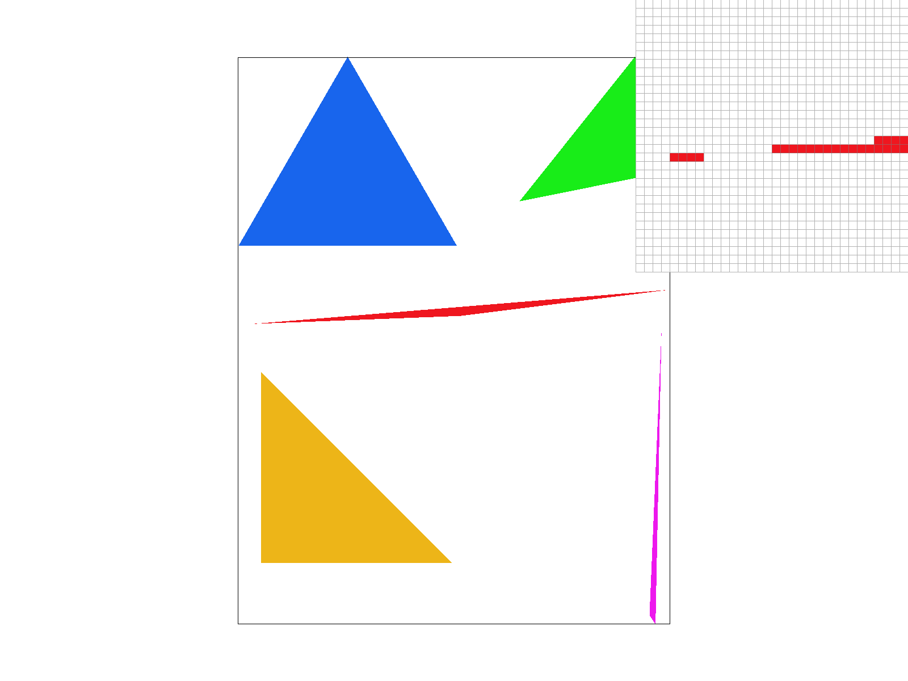
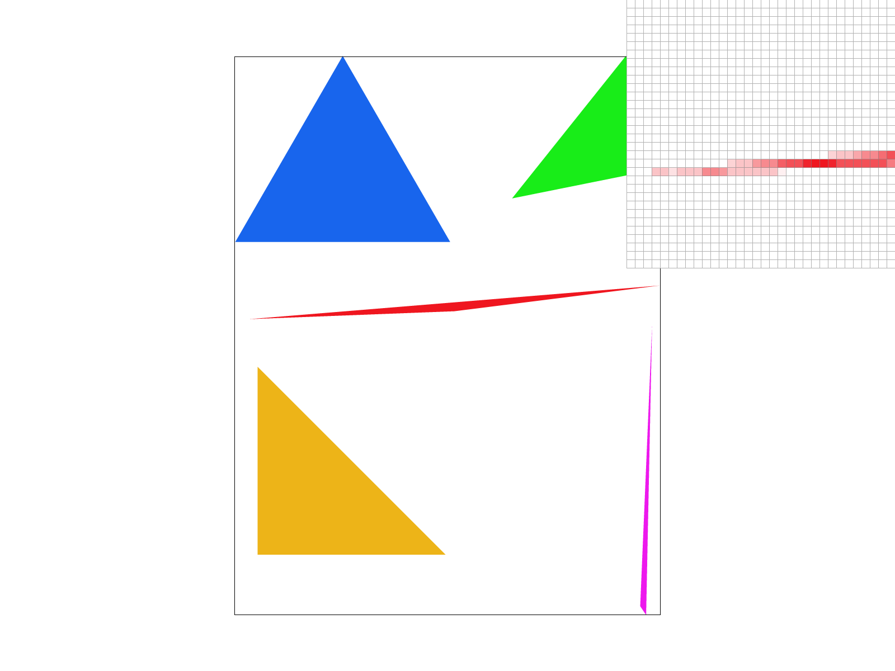
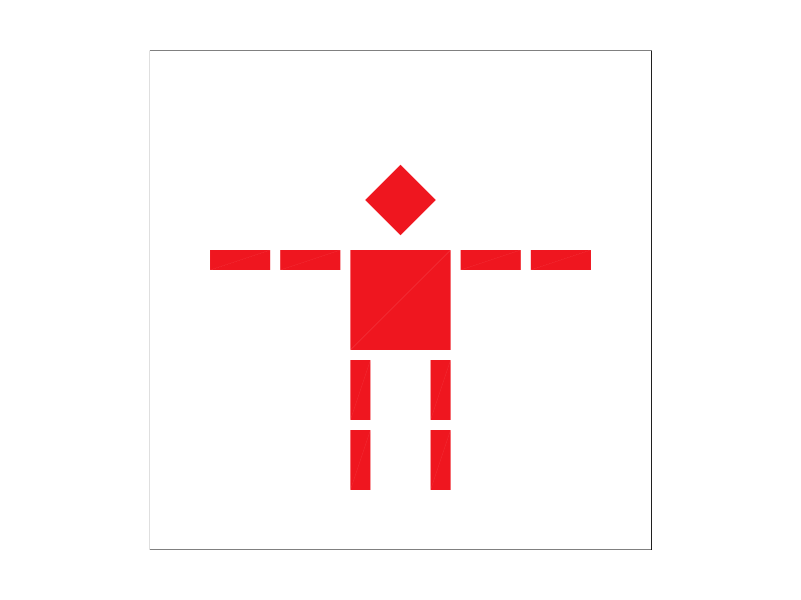
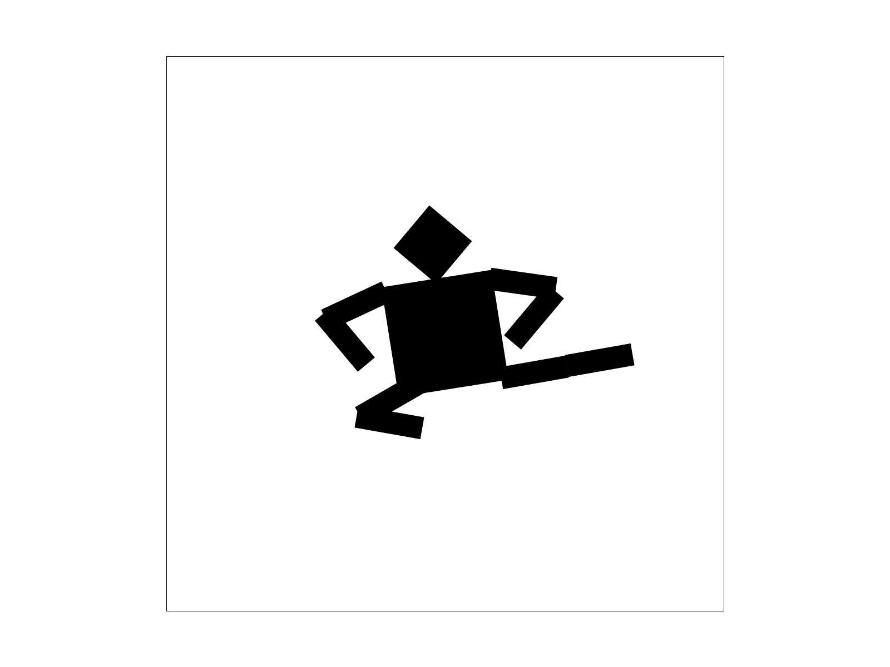
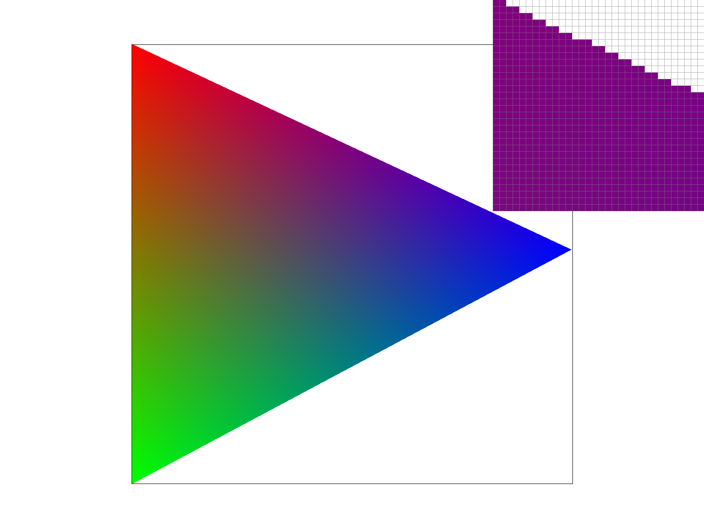
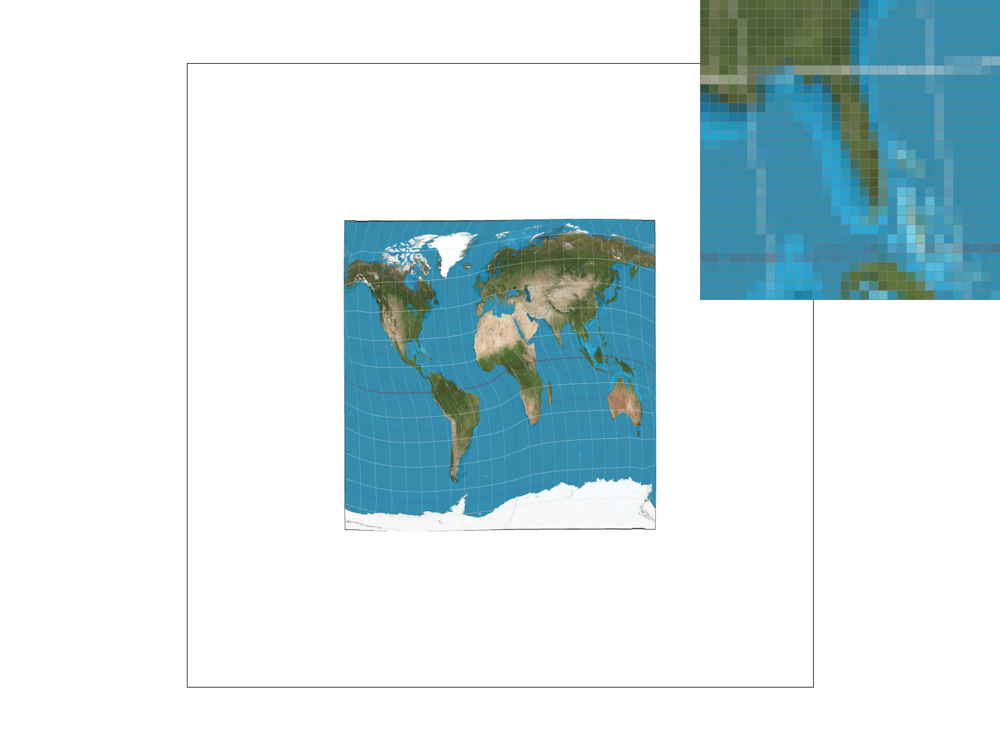
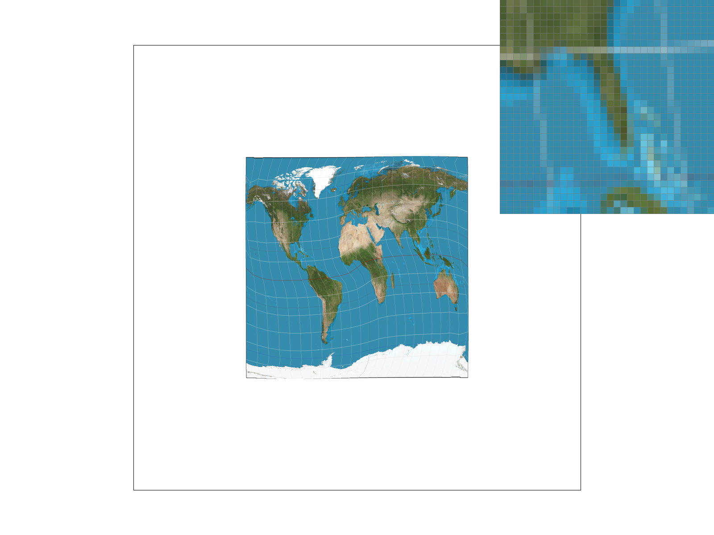
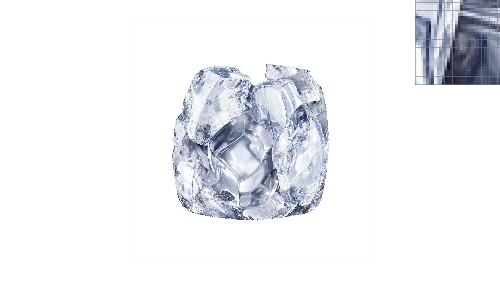

Overview
This project goes over some sampling and anti-aliasing techniques and is broken down into two sections. The first three sections are on rasterization while each of the last three sections provide an additional upgrade that can improve image quality.
1: Drawing Single-Color Triangles
2: Antialiasing by Supersampling
3: Transforms
4: Barycentric coordinates
5: "Pixel sampling" for texture mapping
6: "Level sampling" with mipmaps for texture mapping
After completing this project, we were able to get a behind-the-scenes look on how images are generated and the various complexity of it all. The concepts that we've implemented in this project will always be in the back of our minds everytime we see something beautiful on a screen.
Section I: Rasterization
Part 1: Rasterizing single-color triangles
To rasterize triangles, we create a function (l) to determine whether a sample point is within a triangle or not. If it is, we color it
using the provided function, rasterize_point. (The l function was derived from lecture.)
The sample points are evenly spread out across the image with each point located at the center of a pixel.
We can also optimize this task by only checking sample points within the bounding box of the triangle. We do this by only looping through
points that are within the min X and max X values between the three vertexes and similarly so with the min Y and max Y values.
|

|
Part 2: Antialiasing triangles
With supersampling, we can smooth out high-frequency areas by just having more samples.
Instead of only sampling the center of each pixel, we now sample a multitude of points per pixel. We use the same l function from earlier to
determine whether each point is within the triangle. Then, we take the average number of points to color the pixel accordingly. For example,
a pixel that has every point within the triangle will have a more prominent color than a pixel that only has one sample point within the triangle.
The sample points are evenly spaced within each pixel. We can do this by adding in two more for loops.
If the sample rate is n, we position our first sample point at (x + 1/(sqrt(n) * 2), y + 1/(sqrt(n) * 2)). Then we increase the x and y value
by 1/(sqrt(n) for each new point in both the x and y direction.
For instance, a sample rate of 4 would mean 4 sample points within one pixel. (x + 1/4, y + 1/4) (x + 1/4, y + 3/4) (x + 3/4, y + 1/4) (x + 3/4, y + 3/4)
With a higher sampling rate, we are able to create a more accurate representation of the image because each pixel is provided with more information
through more sample points. This creates a smoother transition along fast-changing areas such as skinny triangle corners.
|
|

|
|

|
Part 3: Transforms
For this task, we implemented transformation matrices. (translate, scale, and rotate)
|

|
|

|
Section II: Sampling
Part 4: Barycentric coordinates
For this task, we utilized barycentric coordinates for the purpose of a smoother coloring effect as seen in the picture of the RGB triangle.
The values α, β, and γ are used as weights to determine the intensity of a point. We can use this idea of intensity for a variety of applications
such as coloring and positioning (seen in this task) and also texturing (seen in task 5 and 6).
α, β, and γ must satisfy the following where A, B, and C are vertices of a triangle and V is a point that we are observing:
V = αA + βB + γC
α + β + γ = 1
If α, β, and γ do not add up to 1, then we know that the point lies outside the triangle.
|

|

|
Part 5: "Pixel sampling" for texture mapping
Pixel sampling is a way to map textures onto corresponding pixels. In this task, we implemented two types of pixel sampling: nearest and bilinear.
Nearest sampling sets the color of the pixel to whatever the nearest texel is. We used the round function on the x and y coordinates to accomplish this. This method is faster than bilinear sampling but results in having more high-frequency changes.
Bilinear sampling takes a weighted average of the four nearest texels and computes a color that is relative to those pixels. As seen in the zoomed image of Florida, we can see the difference between nearest and bilinear pixel sampling when looking at the white longitude line. With bilinear sampling, the line is much smoother and doesn't have many places where colors change quickly.
|
|

|
|
|

|
Part 6: "Level sampling" with mipmaps for texture mapping
Mipmaps are copies of an image at various resolutions. Level 0 is the original image and each next level refers to a lower resolution image. By using a lower resolution copy, we are effectively filtering/blurring an image then sampling from it. This will result in a faster computation and in some cases a better image output.
We choose the nearest level to sample from based on a function derived from lecture. We can also do a bilinear interpolation between the nearest level and the one above it.
We now have three approaches to prevent aliasing effects: pixel sampling, level sampling, and super sampling.
Super sampling at a higher rate will always show an improvement in image quality but the tradeoff is that it takes a high amount of memory/computation.
Between the two types of pixel sampling, nearest sampling will be faster than bilinear but bilinear will have a greater antialiasing power because it computes a more accurate color based on its positioning.
For leveling sampling we touched on three methods: sampling at level 0, sampling at the nearest level, and using bilinear level sampling. However, it is not always clear which method provides the best image. In terms of memory, we would need to increase our memory usage to 4/3 to store all the additional levels in a mipmap.
|
|

|
|
|
|
|
|
|